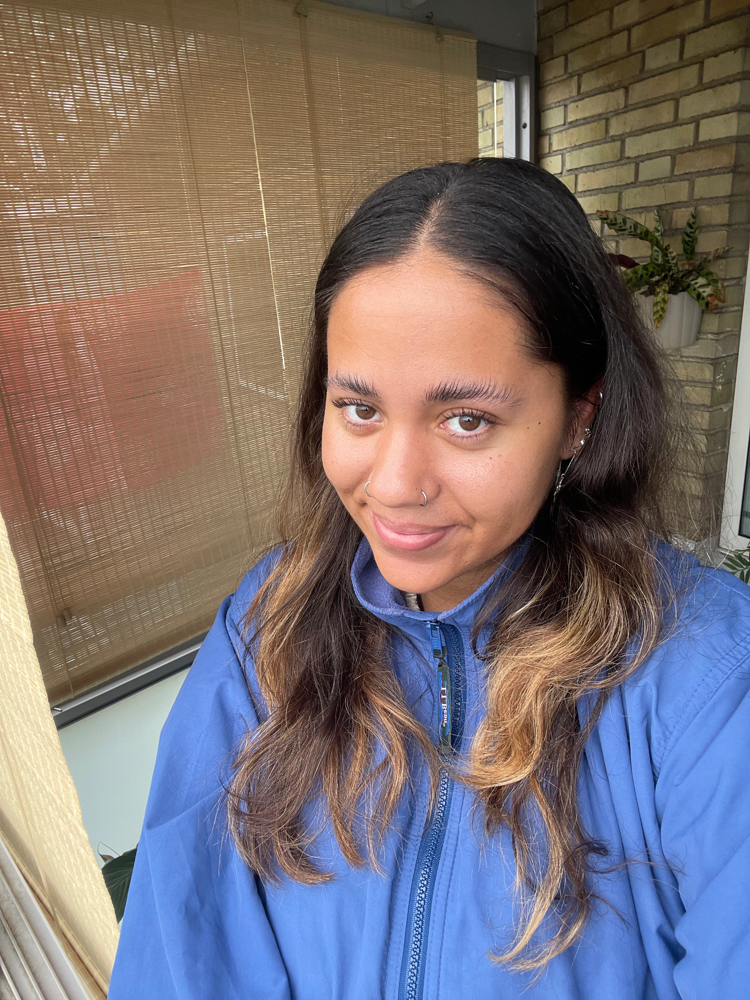

Intro
Jeg arbejder med visuel kommunikation, fordi jeg ønsker at skabe udtryk, der ikke bare bliver set, men oplevet.
Jeg hedder Yasmin Gullev, er 24 år og studerer multimediedesign på Erhvervsakademi København. Her lærer jeg at omsætte idéer til visuelle løsninger med fokus på æstetik, funktion og fortælling.
